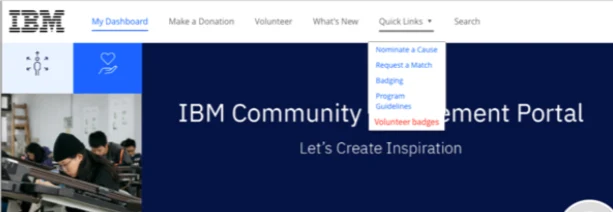
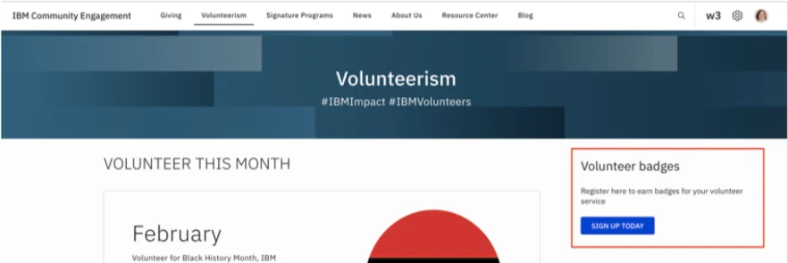
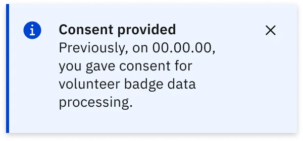

IBM: Benevity Platform Flow
Designing the consent step for IBM's volunteer badges, from a first-round overlay to a standalone page built on the Carbon Design System.

Problem
IBM employees and retirees earn digital badges for volunteering, from an Engagement Award at 40 hours up to Platinum at 4,000, issued through Credly. IBM's CSR team was automating them: log hours in Benevity, and the badge arrives by email. But no hours count until someone accepts the programme's data privacy policy, so the consent pages sat at the start of the whole system. It was a maintenance engagement during a 'deep clean', with quick turnarounds and occasional design tweaks.
01Overlay
My first version asked for consent in a modal, right where people already were.
A 'Before you begin' overlay sat on the w3publisher volunteering page with two plain choices: consent, or don't. Picking one dims the other, and Save is the only way forward.


02Pivot
Neither platform could host an overlay, so consent moved to its own page and both sites link to it.
This was the turning point. After the first round, Kristin Lindeberg, the CSR offering manager, confirmed that Benevity and w3publisher don't allow that kind of action. Benevity only offers its Quick Links menu, while w3publisher had room for a sign-up card on the volunteering page.


03Page
The consent page stands on its own, built closely on Carbon, with room to read before deciding.
A leadspace, the blue banner with the title, gives people a moment before the policy. The client leaned towards photography, so we also explored echoing the banner they already use on Benevity. Links use Carbon's Blue 60 on light backgrounds and Blue 40 on Gray 100, and the notification follows Carbon's component closely. Staying on their grid sped up internal review and meant IBM's team could carry it on without me.

What I learned
My first version was right for people but impossible for the platforms. Now I check what a platform allows before the first flat, then stay inside the system so review stays fast.